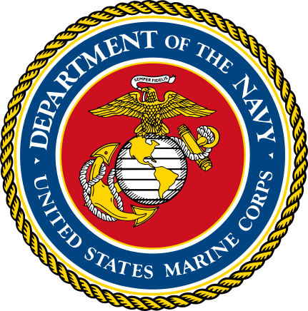

United States Marine Corps
Network Administrator — MOS 0631 2024 – PresentOverview
Serve as a Network Administrator in the United States Marine Corps Reserve supporting communications and networking operations during training environments and multinational exercises.
Responsibilities
- Configure and troubleshoot Cisco-based routing and switching infrastructure.
- Support VLAN configuration, IP addressing, and connectivity testing.
- Perform fault isolation and network troubleshooting during field exercises.
- Assist with communications setup and sustainment during training operations.
- Work within structured operational procedures to maintain reliable network services.
Skills & Tools
Security Clearance
Active Secret Security Clearance
Holds an active Secret security clearance through the United States Marine Corps.
How It Applies
Serving as a Network Administrator (MOS 0631) gives me practical, operational experience configuring and troubleshooting Cisco-based infrastructure in real field environments — not just lab conditions. The structured, procedure-driven nature of military networking work directly reinforces what I study at university and practice in my homelab.
Working in training environments alongside other units and across multinational exercises has also developed my ability to communicate clearly under pressure and maintain composure when connectivity problems need to be resolved quickly. These are skills that translate directly into network engineering and IT operations roles.